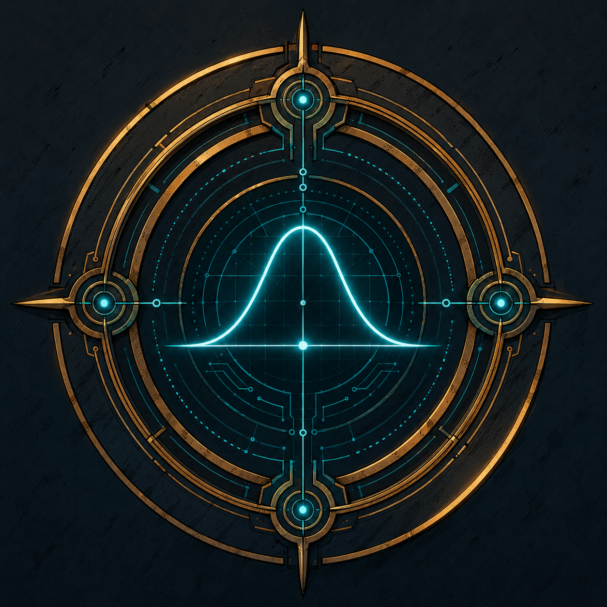
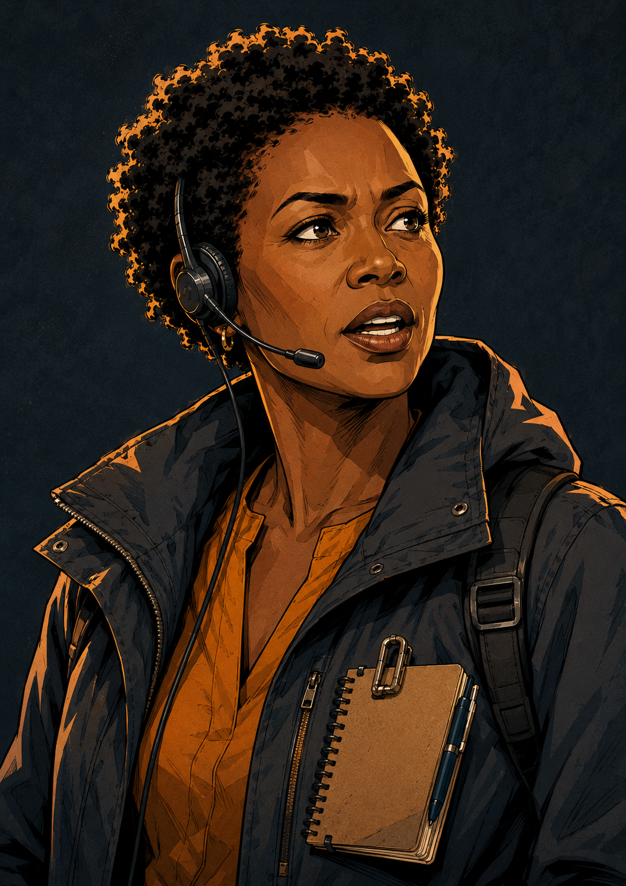
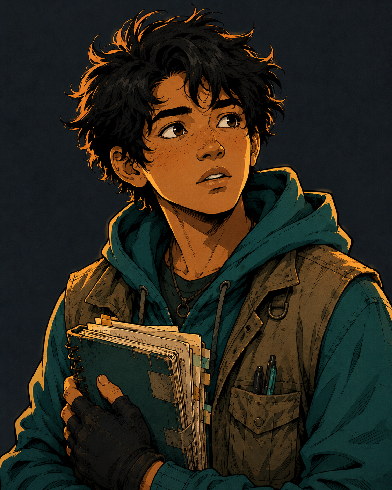

An underground climate archive · Topic 4.9
Deep beneath the monsoon coast lies the Curator’s Archive — a century of the world’s climate, recorded and sealed. The Curator vanished years ago, leaving the records behind three locked vault doors. Tonight the monsoon has breached the lower levels, and the water is rising.

Vault Custodian · transmitting

Three sealed doors stacked below the surface. Start at the deepest and climb out, floor by floor.
Kerala monsoon rainfall is normally distributed.
mean μ = 290 cm · standard deviation σ = 15 cm
Vault One’s records are safe — but they’re only the lowest level. The Curator sealed the archives on the floors above, and the water is still rising. Climb to Vault Two.